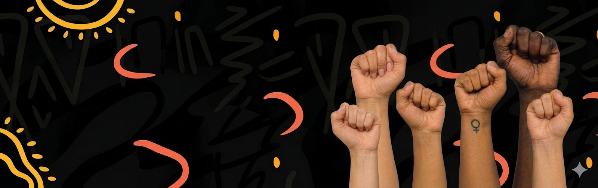

Missão
Resgatar trajetórias da resistência com linguagem acessÃvel e narrativa institucional.
Liberdade se constrói com consciência, coragem e ação coletiva.
Celia Xakriaba
Blocos prontos para serem reutilizados em cada página de mulher.
Resgatar trajetórias da resistência com linguagem acessÃvel e narrativa institucional.
Unimos pesquisa, arte e educação para apresentar cada mulher em profundidade.
Documentamos impactos culturais e sociais que se mantêm vivos até hoje.
Angela Davis nasceu em Birmingham, em um contexto de forte segregação racial, o que marcou profundamente sua infância. Filha de pais engajados na luta por direitos civis, cresceu em um ambiente que valorizava a educação e a consciência polÃtica. Durante sua formação, destacou-se como estudante e aprofundou seus estudos em filosofia e questões sociais, inclusive no exterior. Seus primeiros passos como ativista surgiram ainda na juventude, quando passou a se envolver com movimentos que combatiam o racismo e as desigualdades, enfrentando desafios e repressões que moldaram sua trajetória.

Texto com dados familiares, origens geográficas e educação.
Texto sobre engajamentos iniciais, deslocamentos e desafios enfrentados.
Evento inicial marcante na trajetória.
Conquistas e reconhecimento em outro momento.
Ações transformadoras e participação coletiva.
Legado contemporâneo e homenagens.
Espaço para destacar qualidades, impacto e singularidade.
Use este espaço para uma imagem simbólica ou retrato marcante.
Texto explicando por que sua trajetória se destaca e como sua atuação contribuiu para transformações sociais, culturais, polÃticas ou educacionais.
Use este espaço para mostrar o que torna essa mulher uma referência e por que seu legado continua relevante no presente.
Influência sobre arte, polÃtica, educação e comunidades.
Texto narrando como o legado inspira movimentos e novas lideranças.
Fotos e documentos representativos.
Breve descrição da imagem, documento ou registro histórico.
Crédito: autora, acervo, instituição ou licença
Outra descrição curta para contextualizar a imagem.
Crédito: autora, acervo, instituição ou licença
Descrição breve com foco no significado do registro.
Crédito: autora, acervo, instituição ou licença
Livros, artigos e documentos históricos.
Descrição breve e link.
Descrição breve e link.
Descrição breve e link.
Atualize esta seção para destacar as demais 19 páginas.
Substitua textos, imagens e dados para cada mulher do site.
Ver outras trajetórias